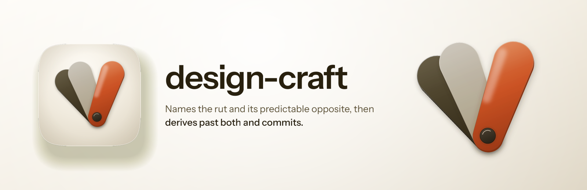
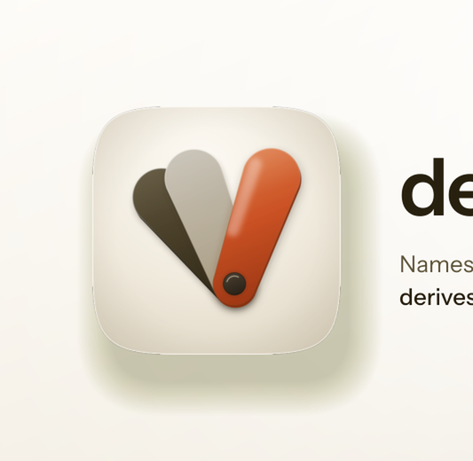

Every size a person actually meets this banner at, then the 12-point rubric. Delivery bar is 10 of 12 with checks 1, 2, 3, 7 and 12 non-negotiable. 5 of 5 mechanical checks pass and 7 still need a human verdict, which is what the renders above are for.


| # | Check | Verdict | Evidence |
|---|---|---|---|
| 1 | Exactly 3200x1040, from a 1600x520 layout at deviceScaleFactor 2 (non-negotiable) | pass | 3200x1040 |
| 2 | The plugin's real icon asset, referenced rather than redrawn (non-negotiable) | pass | 1 artwork reference inlined as a data URI, which is how a file:// render loads it at all |
| 3 | The wordmark is set in a linked web font, not a local system face (non-negotiable) | pass | loads Instrument Sans |
| 4 | Ground register agrees with the icon it sits beside | — | judged by eye on the renders above; fill this in |
| 5 | One warm accent, carried from the icon's own accent constant | — | judged by eye on the renders above; fill this in |
| 6 | Composition derived from the icon's build script, not eyeballed from a sibling | — | judged by eye on the renders above; fill this in |
| 7 | One essence line, no em dash (non-negotiable) | pass | no em dash in the copy |
| 8 | Nothing overflows the frame | — | judged by eye on the renders above; fill this in |
| 9 | Wordmark and essence line both legible at 900px | — | judged by eye on the renders above; fill this in |
| 10 | Wordmark legible at 400px | — | judged by eye on the renders above; fill this in |
| 11 | No element illegibly overlapping another | — | judged by eye on the renders above; fill this in |
| 12 | banner-src retained, so the banner stays editable (non-negotiable) | pass | banner-src.html |
5 / 12
**Ships.** The device is the icon's own sample fan, emitted by `build_icon.py`'s own `leaf_path()`, `slab_path()` and `axis_gradient()` against a `Spec` whose lengths are the icon's scaled by one factor of 0.46 and whose angles are untouched, so `rut_deg` -40, `opposite_deg` -21 and `committed_deg` +19 stand exactly as authored and the commitment gap measures 40 degrees in the emitted SVG. All seven per-leaf layers survive: the cast, the AO tucked under each overlap, the side face, the ramped face at `frost_opacity` and `gel_opacity`, the sheen at three material values, the specular at `spec_w` / `spec_len`, the seat edge and the rim dying along the shared light axis, plus the warm bounce the gel throws on the frost. The ground is `GROUND_HI` / `MID` / `LO` ramped at 158 degrees, which is `atan2` of the shade direction that `LIGHT_ANGLE_DEG` 112 produces, and the tile's contact shadow is `SHADE_DIR` x 40 in `SHADOW`.
**Known liabilities, in the order they would bother someone.** First, this is the icon's device again rather than a second device making the same argument: a reader who meets the tile and the fan together sees the same object twice, once at 280px inside a squircle and once at roughly 1.7x on open porcelain. That is the family's existing habit (mockup-fidelity's banner redraws its icon's device flat) and it was chosen over a novel device because the splay IS the argument, but it is a redundancy rather than a discovery. Second, at 200px displayed width the two rejects merge into one pale mass, so the 19-degree cluster that makes the gap mean something is gone and the read collapses to a warm leaf standing apart from something pale. The icon's own notes claim exactly that read for 16px, so this is the intended floor rather than a failure, but the banner says less at thumbnail size than its own comment implies. Third, the frosted leaf reads pale grey rather than cream at this scale, as it does in the tile, because `frost_opacity` 0.72 over warm porcelain desaturates it.
**One deliberate absence.** There is no accent rule under the wordmark, which the family does use, because this icon spends its one warm hue exactly once and putting a second vermilion mark beside the wordmark would contradict the claim the artwork is making. The cost is real: the left two thirds of the banner carry no chroma at all, and the wordmark has no warm anchor. Judged worth it. Two things were verified by eye rather than by any assertion: the wordmark and essence line are both clean at 900px, and the fan's mass sits level with the icon's rather than below it, which took a placement pass because `placement()` centres the fan on a square tile and a 1600x520 bench is not one.